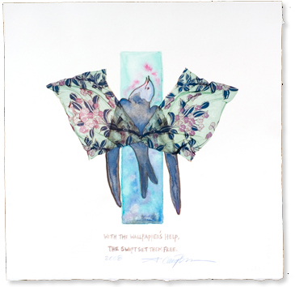
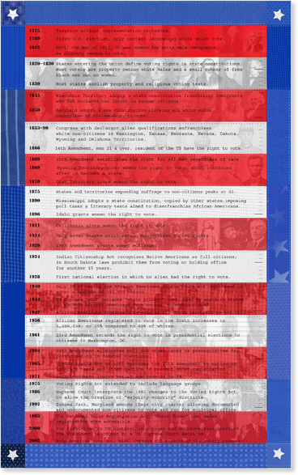
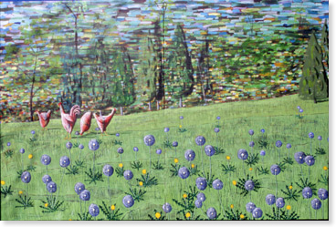
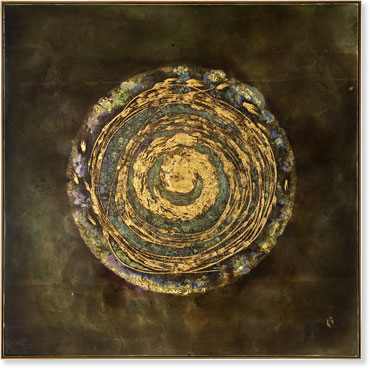

|
Our new venue | Gallery artists in the news | Fall season After six years at the Terraces on First and Water Streets, Les Yeux du Monde is on the move again. Founded in 1995 and located in the owner’s home for its first four years, the gallery moved to West Main Street next to Starr Hill Brewery, courtesy of Coran Capshaw, in 2000. Here it had many innovative shows including an installation by well known Picasso scholar Lydia Gasman, Opening Closed Books, on Thomas Jefferson’s library for the site-specific exhibition Hindsight/Fore-site: Art for the New Millennium. This show, curated by Lyn Bolen Warren (formerly Rushton), for the University of Virginia Art Museum, is documented in the book, Siting Jefferson, published by the U.Va. Press. Another important multi-disciplinary exhibition that took place in the West Main Street location, Reflection: 9/11, included dance, poetry, short stories and art, and was co-curated by Elizabeth Gilliland Fennell. This collaboration led to a move to Water Street and the business Dot 2 Dot, a partnership with E. G. Designs for two years in which the gallery benefited from the talents of Gilliland who not only offered fine papers and her own unique and professional graphic design talents, but also vintage modern furniture, lamps and accessories. For the following four years, Les Yeux du Monde mounted monthly exhibitions of world class artists in the Market Street location and enjoyed collaborations with Second Street Gallery on several shows including the Anne Slaughter Retrospective exhibition, the art of Romanian Bogdan Achimescu, and most recently Rosemarie Fiore. It also benefited from the two magnificent shows that the Festival of the Photograph mounted in its space, which featured William Albert Allard last year and most recently, James Nachtwey. We would like to sincerely thank all those who have collaborated with and supported the gallery during its many incarnations and invite all to join us in our next phase. Although the specific location of the gallery is uncertain at this moment, we look forward to an exciting fall schedule. It is a powerful line-up, beginning in September with John Borden Evans, followed by Shelby Fischer, Annie Harris Massie and Clay Witt. By the fall of 2009, the new gallery space, designed by renowned architect W.G. Clark should be up and running. We are optimistic about the future of the visual arts in Charlottesville, and look forward to being a part of it for many years to come. Cary Brown's current exhibition, The Birds Sang Light and Other Messages of Wonder, is on the move too. It travels this summer to the National Institutes of Health (Bethesda, MD) and can be seen there from July 4 – August 8, 2008. Then is will be at the Washington Cancer Institute (DC) from September 4 – November 4. The exhibition is curated by Lilllian Fitzgerald.  Anne Chesnut's work is included in the exhibition New Prints 2008/Summer Artist’s Commentary at International Print Center New York (ICPNY), June 26 - August 1. The exhibition is the twenty-eighth presentation of IPCNY’s New Prints Program, a series highlighting contemporary prints made within the past year and represents a cross-section of some of the most exceptional printmaking today. For this presentation, print selections were loosely grouped around the theme of artists’ responses to the current social and political climate. Her work can also be seen this summer at small works exhibition at The Arkell Museum, Canajoharie, NY and in Celebration at the Fredericksburg Center for Creative Arts, Fredericksburg VA. And, in the current issue of Piedmont Virginian.  Donna Mintz's latest paintings will be a featured exhibit at LYDM during the '08-09 season. Through July 12th some of her new work can be seen in Atlanta at Sandler Hudson Gallery. Catherine Fox, of the Atlanta Journal Constitution, writes about Mintz's drought-inspired painting, sculpture, and installation: "This show was inspired by what she discovered in the parched lake [Lake Lanier] bed when the waters receded over the past year. The porcelain shard, the arrowhead, the arm of a porcelain doll — these talismans of the past are the subject and materials of her installations and the impetus for a promising new direction in her paintings." Read more > Fall season, a powerful line up The fall schedule begins in September with John Borden Evans, followed by Shelby Fischer, Annie Harris Massie and Clay Witt.  
|


| © 1995-2012 All Rights Reserved. Les Yeux du Monde |